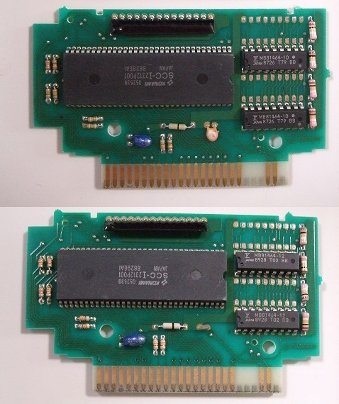
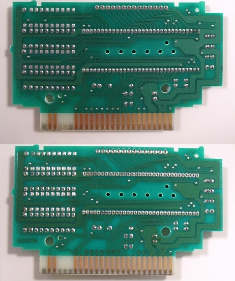
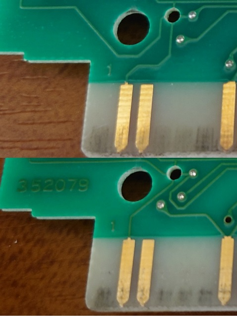
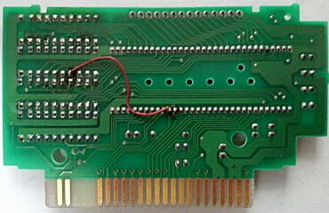
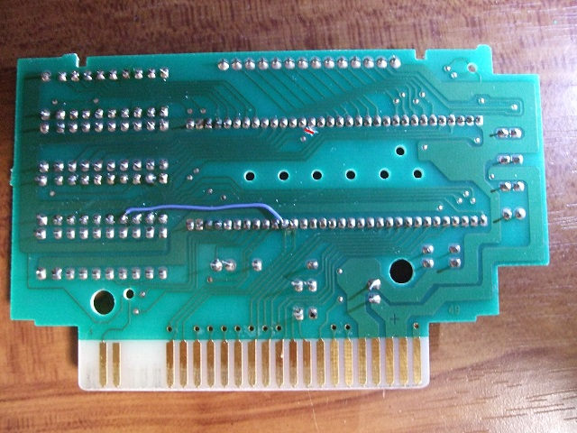
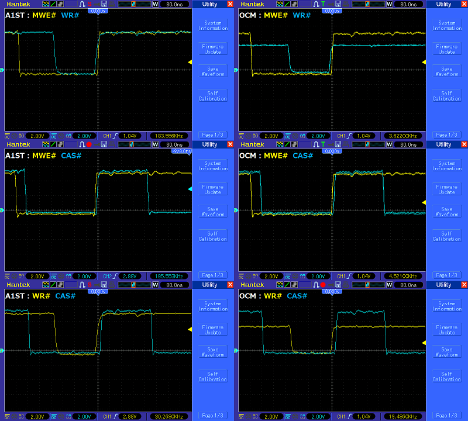
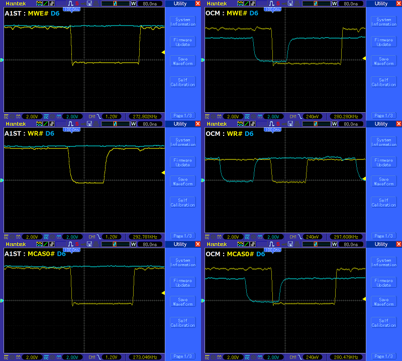
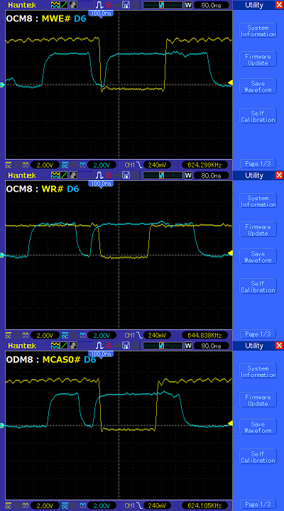
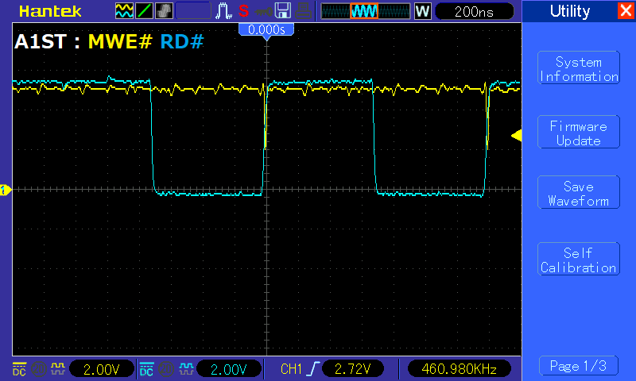

スナッチャーのSCC その2
BABAXさんのサイトにSCC搭載基板の回路図がアップされた際に、下記コメントがありました。
SCC搭載カートリッジの回路図公開
「SDスナッチャーの基板は351446と同一と思っていたのですが、画像検索すると352079という基板もあるようです。」
手元にスナッチャーとSDスナッチャーのSCCカートリッジが2個ずつあったので確認したところ、スナッチャーのSCCカートリッジは両方とも351446、SDスナッチャーのカートリッジは両方とも352079でした。同一基板でRAMが載っているところが違うだけ・・・と思い込んでいましたが、実は一見、同じところに載っているように見えたりします。上がスナッチャーの基板、下がSDスナッチャーの基板です。


何故と思いつつ・・・異なる場所を探してみると、スロットの1ピン付近のパターンが微妙に異なっていました。

変更点１：スナッチャー用SCC基板(351446)ではDRAMの4ピン(/WE)がSCC-Iの14ピン(/MWE)につながっていますが、SDスナッチャー用SCC基板(352079)ではスロットの13ピン(/WR)につながっています。
変更点２：SDスナッチャー用SCC基板ではスロットの1ピン付近に3個のスルーホールがあり、そのうち1個はスロットの13ピン(/WR)とつながっています。残りの二つのスルーホールはSCC-Iの59ピン(/MCAS0)と58ピン(/MCAS1)につながっており、/MCAS0がBank #00〜07h用のDRAM、/MCAS1がBank #08〜0Fh用のDRAMにつながっています。写真を見ると分かるとおり、スルーホールの位置は同じですが配線が入れ替わっています。そのため、スナッチャー用とSDスナッチャー用では論理的にはDRAMが入れ替わっていますが、DRAMを載せる位置としては同じにみえています。
スナッチャー用SCCカートリッジとSDスナッチャー用SCCカートリッジは同じに見えるけどお互い使えない＝互換性が無い、メモリを追加しても無駄と思わせたかったのかなとちょっと勘ぐってしまいましたが、製造工程で間違えないようにDRAMを載せる位置を合わせただけだと思います。
DRAMの4ピン(/WE)の変更理由は謎ですが、MSX Resource Center(MRC)に下の写真が載っていました。
Konami Sound Cartridge - MSX Wikiより

オレンジのジャンパがついており、DRAMの4ピン(/WE)とSCC-Iの54ピン(/WR, スロットの13ピンとつながっている)をつないでいますので、SDスナッチャー用SCC基板相当に変更されているようで、下記コメントが書かれていました。
「It seems that there are two versions of the PCB: an older version with a wire on the back and a newer version PCB without it. Probably because the SCC+ could not address 128kB with the older PCB.」
ようするに128kBのDRAMを管理できないために追加されたのではないか、と。理由を推測していると言うことは、意図して追加した訳では無く、元からこのジャンパが存在していた可能性が高いということです。私のスナッチャー用SCCカートリッジの基板にはジャンパはありませんでしたが、ある時期から追加されたのかも知れません。理由はさておき、本当に128kBのDRAMを管理できないのであれば、ジャンパ無しの状態ではDRAMを追加してもSDスナッチャーが動かないのでは、と思い検証してみました。
・FS-A1ST＋スナッチャー用SCC基板(DRAM未増設)＋SDスナッチャー：起動せず
・FS-A1ST＋スナッチャー用SCC基板(DRAM増設済)＋SDスナッチャー：起動する
DRAM増設によってSDスナッチャーが起動するようになったので、一応管理できているようです。念のため、元からあるDRAM(Bank #00-07h)と増設したDRAM(Bank #08-0Fh)を分けて管理できているのか、SHEMを使用してそれぞれのBankに対して書き込みをしてみましたが、きちんと別々の値を保持しており、管理は問題ないようです。
ここで海胆スキー様がツイートされていたスナッチャー起動時の問題をふと思い出しました。1Chip MSXではスナッチャーが起動しない、という不具合があるようです。スナッチャーくらい有名なソフトは1Chip MSX開発時に検証している気もしましたが、まずは1Chip MSXで試してみると・・・確かにスナッチャー用SCCカートリッジが認識されませんでした。スナッチャーは起動せず、SDスナッチャーは「サウンドカートリッジをさしてください」というメッセージで止まりました。
関係あるのか無いのか、とりあえずスナッチャー用SCC基板(DRAM増設済)をカット＆ジャンパをしてSDスナッチャー用SCC基板相当に改造してみると・・・問題なくスナッチャーとSDスナッチャーが動くようになりました。1Chip MSX開発時に検証に用いたSCCカートリッジ次第では不具合が見つからなかった可能性がありそうです。

赤線のところはSCC-Iの14ピン(/MWE)がDRAMの4ピン(/WE)とつながっているのをカット、水色のジャンパ線でSCC-Iの54ピン(/WR、スロットの13ピンとつながっている)とDRAMの4ピン(/WE)をつなげています。
と、いうことで理由はよく分かりませんが、元々の基板では互換性、恐らくタイミングにからむ問題があり、変更されたものと思われます。一応、PanasonicのMSX2+の6MHzモードが関係あるのか確認してみましたが、変更前でも変更後でもスナッチャーは起動しませんでしたので、それが原因では無いようです。
追加でオシロスコープを使って波形をとってみました。2chしかないのでちょっと見にくいですが・・・
左がFS-A1ST、右が1Chip MSXでの波形です。上から「SCC-Iの14ピン(/MWE)とスロットの13ピン(/WR)」、「SCC-Iの14ピン(/MWE)とDRAMの/CAS」、「スロットの13ピン(/WR)とDRAMの16ピン(/CAS)」です。1Chip MSXの出力が3.3Vのため、/WRの高さが異なる以外については、タイミングに差はなく、これだけでは原因が分かりません。

スロットからの/WRがLowになるよりも早くSCC-Iの/MWEがLowになっているところが一つのポイントです。DRAMへの書き込みが行われるのは、DRAMの/CASと/WE（ここにSCC-Iの/MWEまたはスロットからの/WRがつながる）の両方がLowになっているときです。Lowになる順番は/MWE, /CAS, /WRなので、DRAMの/WEにSCCI-の/MWEがつながっているとき（未修正のスナッチャー用SCC基板）は/CASがLowになった後にデータが書き込まれます。DRAMの/WEにスロットの/WRがつながっているとき（修正されたスナッチャー用SCC基板またはSDスナッチャー用SCC基板）は/WRがLowになった後にデータが書き込まれます。前者のタイミングでの書き込みは/OE-Controlled Write Cycle、後者のタイミングでの書き込みはEarly Write Cycleとよばれる書き込みモードになります。
次に、データとのタイミングを確認してみました。
左がFS-A1ST、右が1Chip MSXでの波形です。上から「SCC-Iの14ピン(/MWE)とデータ(D6)」、「SCC-Iの14ピン(/MWE)とデータ(D6)」、「DRAMの16ピン(/CAS)とデータ(D6)」です。1Chip MSXの出力が3.3Vのため、/WRとD6の高さがFS-A1STと1Chip MSXでは異なっています。

どちらも同じプログラムでFFhをSCC基板上のDRAMに書き込んだときのものですが、明らかに水色のデータの動きが異なっています。FS-A1STでは安定していますが、1ChipMSXでは/MWEや/CASがLowになった後、/WRがLowになる前にデータが変化しています。そのため、/MWEと/CASを使う未修正のスナッチャー用SCC基板ではデータが正しく書き込まれず、/CASと/WRを使う修正されたスナッチャー用SCC基板またはSDスナッチャー用SCC基板ではデータが正常に書き込まれるようです。
ちなみに、1ChipMSX改の8MHzモードでは（音は別にして）正常に動くという話もあったので、波形を見てみました。上の1Chip MSXの波形と似ていますが、それとは異なり、/MWEがLowになった後、/CASや/WRがLowになる前にデータが変化しています。/CASがLowになった後のデータは安定しているので、未修正のスナッチャー用SCC基板でもデータが正常に書き込まれるようです。

確認したわけではありませんが、恐らく1Chip MSXのデータの波形自体はZ80の仕様に反している訳ではないと思います。未修正のスナッチャー用SCC基板でのデータ書き込みタイミングがZ80での書き込みタイミングから外れてしまっており、そのために基板修正がされたのだと思います。
スロットからの/WRより先にSCC-Iの/MWEがLowになるのがちょっと不思議だったのですが、どうやらスロットからの/SLTSLがLowで/RDがHighの時に、/MWEがLowになるようです。ちなみに、/MWEに結構な頻度でグリッチノイズ（一瞬だけLowになるノイズ）が発生していました。このグリッチノイズ自体はFS-A1STでも1Chip MSXでも出ているので、不具合とは恐らく関係ありません。/MWEと/RDの波形を確認したところ、/RDがHighになる時にグリッチノイズが発生していることが分かりました。MSX2テクニカルハンドブックのタイミングチャートによると/SLTSLと/RDは同時、もしくは/SLTSLの方が遅くLowになるので、/RDがLowになる時は問題無さそうです。しかし、/RDがHighになる時は/SLTSLの方が遅くHighになるので、ここでグリッチノイズがでるようです。

ちなみに、「SX-1Mini+でSDスナッチャーが動かない（実機では動いた）」というツイートも見かけました。しかし、「スナッチャー用SCC基板を修正してSDスナッチャー用SCC基板相当にしたところSX-1MiniでSDスナッチャーが動いた」、「SX-2では動いている」というツイートもありました。原因が同じだとするなら、SDスナッチャーの発売当時は、まだ未修正のスナッチャー用SCC基板（ただしDRAMの位置が異なる）が使われていたのかも知れません。いずれにせよ、あとは動かない実物が無いと分かりませんので、調査はここで終わりたいと思います。
ネタを提供して下さった（勝手に頂いたともいますが^-^;）BABAX様、海胆スキー様、ハムカツ様、Y.Katsume様に感謝いたします。また、貴重なアドバイスをいただきましたHRA!さん、裕之さん、OKEIさんにも感謝いたします。
お約束ですが、この噂を見て改造などを行い故障やその他問題が発生しても責任は負えません。各自の責任において情報を広く集めて行うことをおすすめします。